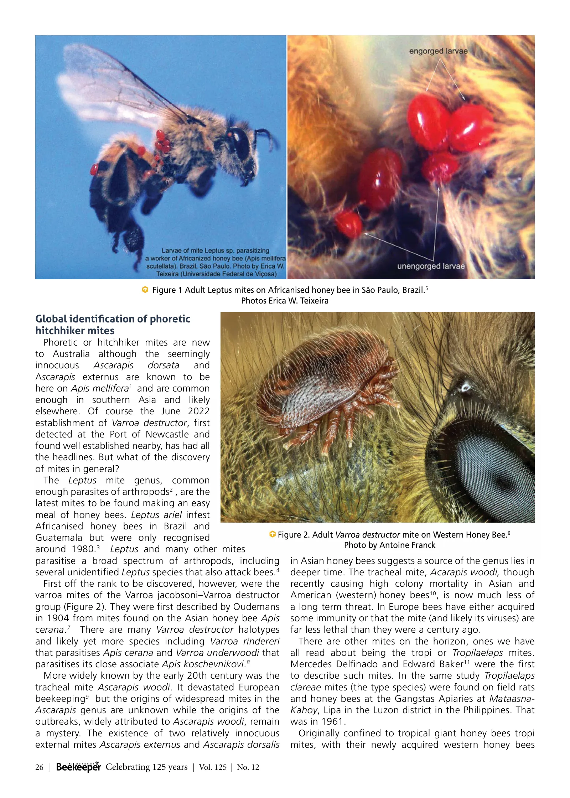

Global identification of phoretic
hitchhiker mites
Phoretic or hitchhiker mites are new
to Australia although the seemingly
innocuous
Ascarapis
dorsata
and
Ascarapis externus are known to be
here on Apis mellifera1 and are common
enough in southern Asia and likely
elsewhere. Of course the June 2022
establishment of Varroa destructor, first
detected at the Port of Newcastle and
found well established nearby, has had all
the headlines. But what of the discovery
of mites in general?
The Leptus mite genus, common
enough parasites of arthropods2 , are the
latest mites to be found making an easy
meal of honey bees. Leptus ariel infest
Africanised honey bees in Brazil and
Guatemala but were only recognised
around 1980.3 Leptus and many other mites
parasitise a broad spectrum of arthropods, including
several unidentified Leptus species that also attack bees.4
First off the rank to be discovered, however, were the
varroa mites of the Varroa jacobsoni–Varroa destructor
group (Figure 2). They were first described by Oudemans
in 1904 from mites found on the Asian honey bee Apis
cerana.7 There are many Varroa destructor halotypes
and likely yet more species including Varroa rindereri
that parasitises Apis cerana and Varroa underwoodi that
parasitises its close associate Apis koschevnikovi.8
More widely known by the early 20th century was the
tracheal mite Ascarapis woodi. It devastated European
beekeeping9 but the origins of widespread mites in the
Ascarapis genus are unknown while the origins of the
outbreaks, widely attributed to Ascarapis woodi, remain
a mystery. The existence of two relatively innocuous
external mites Ascarapis externus and Ascarapis dorsalis
Figure 1 Adult Leptus mites on Africanised honey bee in São Paulo, Brazil.5
Photos Erica W. Teixeira
Figure 2. Adult Varroa destructor mite on Western Honey Bee.6
Photo by Antoine Franck
in Asian honey bees suggests a source of the genus lies in
deeper time. The tracheal mite, Acarapis woodi, though
recently causing high colony mortality in Asian and
American (western) honey bees10, is now much less of
a long term threat. In Europe bees have either acquired
some immunity or that the mite (and likely its viruses) are
far less lethal than they were a century ago.
There are other mites on the horizon, ones we have
all read about being the tropi or Tropilaelaps mites.
Mercedes Delfinado and Edward Baker11 were the first
to describe such mites. In the same study Tropilaelaps
clareae mites (the type species) were found on field rats
and honey bees at the Gangstas Apiaries at Mataasna-
Kahoy, Lipa in the Luzon district in the Philippines. That
was in 1961.
Originally confined to tropical giant honey bees tropi
mites, with their newly acquired western honey bees
26 |
Celebrating 125 years | Vol. 125 | No. 12